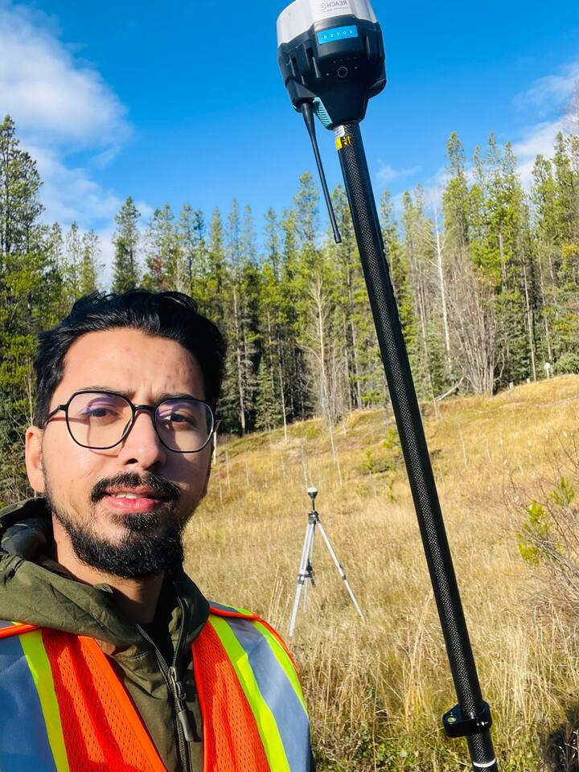

Santosh Ayer
I am a Graduate Research Assistant Fellow and graduate researcher in Forest Biology and Management at the University of Alberta, Canada. My graduate research evaluates how forest growth-and-yield models represent forest responses to thinning and how differences among modelling approaches affect the interpretation of stand development and forest-management outcomes.
My broader research interests include forest biometrics, forest inventory, allometry, biomass and carbon estimation, growth modelling, and emerging approaches for tree measurement. Across these areas, I am particularly interested in making analytical methods transparent, reproducible, and practical for research, education, and forest management.
I want to contribute to Nepal’s forestry sector by developing accessible and scientifically defensible tools that connect forestry research with education and operational decision-making. This goal guides the development of nepalallometry and my wider research on Nepal’s forest measurement and allometric challenges.
Role in nepalallometry
I am the developer and maintainer of
nepalallometry, an extensible umbrella R
package for allometric estimation relevant to Nepal’s forest trees. The
first release focuses on biomass and carbon estimation through
biomass(), while the package is structured to support
additional Nepal-relevant allometric and inventory tools in future
releases.
The package implements published methods but does not claim authorship of the underlying equations. Each model, dataset, regulatory document, and conversion factor is credited to its original source through the package reference registry.
Future development
Planned directions for nepalallometry include additional allometric models and species, stem-volume estimation, height-diameter relationships, and other practical inventory modules where appropriate equations and supporting evidence are available. New components will continue to document their sources, units, calibration domains, assumptions, and limitations explicitly.